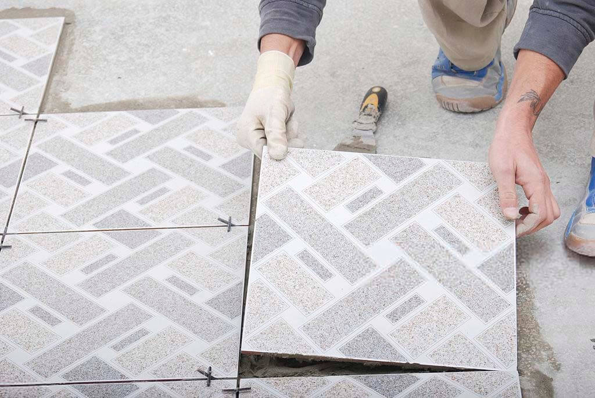

صيانة السيراميك وعملية التبليط
طرق صيانة السيراميك وعملية التبليط

الأشياء التي يجب وضعها في الاعتبار قبل تركيب البلاط:
- قبل البدء في أعمال تركيب البلاط فوق مستوى القاعدة (أو بلاط الدور الأرضي)، تأكد من الدمك المناسب لطبقة التربة أو الردم.
- تأكد أيضًا من أن صبة النظافة قد تم تنفيذها مع بالمناسيب المناسبة مع ضبط الميول إذا لزم الأمر.
- يجب أن يتم الانتهاء من أعمال البناء بالطوب (الجدران) والمحارة لجميع الغرف قبل تركيب البلاط.
- يجب تركيب بلاط الحائط أولاً قبل البدء في تركيب بلاط الأرضيات.
- يجب إكمال أعمال العزل المائي أولاً ومطابقة للرسومات والتفاصيل.
حصر كميات وتخزين المواد اللازمة لتنفيذ أعمال تركيب البلاط:
يتطلب تركيب البلاط استخدام مجموعة مختلفة من مواد البناء مثل الرمل والأسمنت والبلاط نفسه. يوصى بحساب الكمية المطلوبة من البلاط لتنفيذ أعمال تركيب البلاط بدقة، حيث يمكن أن يقلل ذلك من الفاقد أو الهدر.
- يتم قياس كمية البلاط بالمساحة (قدم مربع أو متر مربع).
- يمكن الحصول على الكمية بضرب طول وعرض الغرفة في حالة تركيب بلاط الأرضية.
- في حالة تركيب بلاط الجدران يمكن الحصول عليها بضرب طول الجدار وارتفاعه.
- يجب معرفة الأرقام التقريبية لعدد البلاطات عن طريق قسمة مساحة الأرضية أو الحائط على مساحة البلاطة الواحدة.
- كمية الأسمنت المستهلكة لتركيب متر مربع واحد من بلاط السيراميك هي ١١ كجم (نسبة خلط ١: ٤) وبسمك ٢٥ ملم ولسمك ٥٠ ملم يلزم ٢٢ كجم أسمنت. بالإضافة إلى ذلك، يتم استخدام ٢.٢٥ كجم من الأسمنت الأبيض أيضًا في تعبئة الفواصل.
- يبلغ استهلاك الأسمنت لتركيب متر مربع واحد من حجر كوتا ٦.٥ كجم (نسبة خلط ١: ٦) لطبقة بسمك ٣٠ ملم وللبلاط الفسيفسائي ١٠ كجم (نسبة خلط ١: ٦) لفرشة أساس بسماكة ٣٠ ملم.
- يجب تخزين المواد مثل البلاط والأسمنت والرمل بكميات كافية وبطريقة صحيحة.
يسعدنا تواصلك معنا لطلب الخدمة
يمكنك الآن الإتصال بنا عبر الهاتف، أو الواتساب
قائمة التحقق أثناء تركيب البلاط:
- يجب إجراء اختبار لجميع المواد، ويجب أن يكون وفقًا لمواصفات كود المنطقة أو كما هو محدد في الرسومات أو وفقًا للتفاصيل.
- تأكد من أن لديك جميع المعدات والأدوات والآلات اللازمة لإكمال أعمال تركيب البلاط بنجاح.
- يجب عمل السقالات الفولاذية / الخشبية بشكل آمن لتركيب البلاط على الجدران (لأعمال تركيب أكثر من مترين في الارتفاع).
- إزالة جميع المونة السائبة أوالمتصلبة من بلاطة السقف، وتنظيفها عن طريق نفخ الهواء أو ضخ الماء على السطح.
- يجب غربلة الرمل من خلال منخل بالحجم المعتمد.
- يجب نقع البلاط في الماء لمدة ٢٤ ساعة قبل الاستخدام. ، ويجب أن يكون السطح المطبق عليه البلاط رطبًا (رش السطح بالماء) في وقت تركيب البلاط.
- يجب أن تكون المادة اللاصقة أو العجينة الأسمنتية حسب المواصفات ويجب استخدامها خلال ٣٠ دقيقة من إضافة الماء.
- يجب عدم استخدام المونة أو المادة اللاصقة بعد حدوث الشك الابتدائي.
- عند استخدام بلاط السيراميك أو بلاط الموزاييك، قم دائمًا بنشر وتوزيع كل البلاط في الغرفة / المنطقة للتحقق مما إذا كانت جميع البلاطات لها نفس اللون والنمط والظل. إذا كانوا مختلفين، قم بتغييرهم لأن التغيير بعد ذلك سيكون صعبًا للغاية.
- قبل البدء في أعمال تركيب البلاط، يجب ضبط المناسيب وعمل الشيرب على الحائط على ارتفاع مناسب.
- من المهم جدًا أن تبدأ العمل من غرفة / منطقة مفتوحة. إذا كان حجم الغرفة غير منتظم، فقم بتوفير قطعيات من البلاط في المناطق التي سيتم تغطيتها بقطع الأثاث.
- يجب تنفيذ النمط المشترك للبلاط حسب الرسم أو إذا لم يكن محددًا في الرسم، استشر المهندس المعماري أو المهندس المسؤول.
- في حالة الحمام، يجب وضع ملحقات وإكسسوارات الحمام عند تقاطع البلاطات. التركيبات والملحقات في وسط أو داخل حيز البلاطة ستبدو قبيحة.
- يجب صب طبقة أساس (طبقة من الخرسانة سكريد على بلاطة السقف) من ٤٠ مم إلى ١٠٠ مم لأعمال تركيب البلاط إذا تم تحديدها في الرسومات أو للحفاظ على ميول الأرضية. يجب معالجة طبقة الأساس بشكل صحيح لمدة ٧ أيام على الأقل.
- يجب فحص الميول في أعمال التبليط في مواقع مختلفة، والتي قد تختلف من ١ : ٤٨ إلى ١ : ٦٠ أو كما هو محدد في الرسومات. يجب أن يسير الميل في اتجاه مخرج المياه أو باتجاه الصفاية.
- يجب أن تثبت الوزرات من نفس الظل والنمط، مع توفير مفصل للحركة بين الوزرات وبلاط الأرضيات.
- في حالة تركيب البلاط باستخدام طبقة أساس من المونة الأسمنتية، يجب وضع طبقة من مونة الأسمنت الصافي عن طريق توزيع ٢ كجم من الأسمنت على مساحة ١ متر مربع لضمان رابطة جيدة.
- إذا كنت تستخدم مواد كيميائية / مادة لاصقة لتركيب البلاط، فعليك اتباع تعليمات الشركة المصنعة بدقة ومعرفة عمرها الافتراضي.
- بعد وضع المونة، قم بالتثبيت والضغط والنقر على البلاط بواسطة مطرقة خشبية أو مطاطية لضمان استواء السطح العلوي وتقليل الفراغ أسفل البلاط.
- نظف الوصلات أو المفاصل بين البلاط بقطعة قماش بعد التجفيف الأولي للمفاصل واستخدم الأسمنت الأبيض للحصول على مظهر أفضل.
- يجب عمل مفاصل البلاط أو فواصل البلاط بشكل صحيح ومتساوية ويجب ملؤها بالإسمنت الأبيض أو بصبغة مقاربة.
يسعدنا تواصلك معنا لطلب الخدمة
يمكنك الآن الإتصال بنا عبر الهاتف، أو الواتساب
اختبار الأعمال بعد تركيب البلاط:
- يجب فحص أعمال تركيب البلاط بحيث تكون في الخطوط والمستويات والمناسيب الصحيحة.
- يجب إتباع احتياطات خاصة في وقت فحص الوصلات بين البلاط لأنها السبب الرئيسي للتسرب أو الرطوبة.
- يجب فحص الميول عن طريق إسقاط بعض الماء على الأرض. يجب أن يتحرك الماء في اتجاه المنحدر أو نحو الصرف.
العناية بعد أعمال تركيب البلاط:
- لا تخطو (لا تتحرك) فوق البلاط لمدة ٢٤ ساعة على الأقل بعد أعمال تركيب البلاط.
- قم بتنظيف المنطقة بشكل صحيح بعد الانتهاء من أعمال تركيب البلاط.
- يجب معالجة أعمال التبليط لمدة ٧ إلى ١٠ أيام على الأقل وملء الوصلات بالجراوت عند الحاجة وتنظيفها جيدًا بعد الانتهاء من فترة المعالجة.
اشتراطات السلامة أثناء تركيب البلاط:
يعد تحليل السلامة أثناء تركيب البلاط مهمًا جدًا لضمان سلامة المبلطين. دعونا نناقش الاحتياطات لذلك.
- يجب إعداد بيان لطريقة تركيب البلاط وكيفية التعامل مع المواد ووضعها وتنظيفها قبل القيام بالأعمال.
- يجب أن يكون المبلط ماهرًا وذو خبرة.
- تأكد من أن جميع تدابير السلامة (خوذة الأمان وقناع الوجه وقفازات اليد المطاطية ونظارات الأمان وأحذية الأمان) يجب توفيرها لعامل التبليط.
- يجب توفير تدابير الإسعافات الأولية في الموقع حيث يتم تنفيذ تركيب البلاط.
- قم دائمًا بتحليل سلامة العمل وتنفيذ أعمال تركيب البلاط التجريبية في مناطق صغيرة قبل أن تبدأ العملية الرئيسية. إذا لزم الأمر، يجب توفير احتياطات أمان إضافية.
- تأكد من التهوية المناسبة والأضواء الكهربائية عند تركيب البلاط في مكان ضيق ومكان مظلم.
- يجب أن يكون مشغل الرافعة ومشغل آلة التلميع ماهرًا.